You are Major Shawna “Hopper” Jemison, a pilot in the
Interstellar Patrol Force for the United Human Planets. For the past
four years, the once-peaceful Joint Federation of Sentient Races (of
which the Humans were one of five member species, in addition to the
three SapiAIs) has been embroiled in civil war, with no end in sight.
Four years ago, just before the dawn of the war, you were on patrol near
the border separating Human space from that of the Trichords (a fellow
member species of the JFSR), when you received an automated distress call
from a remote research colony on the planetoid Zenith, home to hundreds
of Human and Trichord scientists. As you set course for Zenith to assist
them, the signal suddenly went dead. Whatever was happening down there,
something had just destroyed their transmitter array--a bad sign.
The game begins as you arrive at the colony to find it badly damaged and
apparently abandoned. You must explore Zenith to find and rescue the
colonists, to determine what disaster took place here, and to discover
the secret that would soon start a galactic civil war...
Controls
Azimuth is primarily played with the keyboard; you will use the
mouse on the title screen and pause screen, but not during gameplay.
There is no special support for gamepads, but any input device that
emulates a keyboard should work fine.
The default controls are listed below; you can customize these controls
from the title screen or pause screen by clicking on the
“Options” button on either screen. From there, click the key
name you want to change, then press the new key you'd like to use.
Up Arrow: Thrust
Hold this key to accelerate your ship forwards.
Down Arrow: Reverse
Once you get the Retro Thrusters
upgrade, you can hold this key to accelerate your ship
backwards.
Right Arrow: Turn right
Hold this key to rotate your ship to the right (clockwise).
Left Arrow: Turn left
Hold this key to rotate your ship to the left
(counterclockwise).
C: Fire
Press this key to fire whatever weapon you have selected. Once you
get the Charge Gun upgrade and have it
selected, you can hold this key down to charge up your gun, then
release it to fire.
X: Ordnance
Once you have rockets or bombs, if
you're holding down this key when you press the fire key, you'll fire
rockets/bombs instead of your main guns.
Z: Utility
Press this key while near a save point, recharge station, or
communications console to use it. Once you get the
Tractor Beam and/or
Milliwave Radar upgrades, you can hold
this key down to activate those items as well.
Escape: Pause
Press this key to pause or unpause the game.
To select different weapons (once you acquire several different weapon
upgrades), you can either pause the game and click on the weapon name(s) to
select them, or you can use the number keys to select them at any time (1
through 8 to switch guns, 9 and 0 to switch ordnance).
Doors
Different rooms in the colony are typically separated by doors, which can
be opened by shooting them. Some heavier blast doors will require more
powerful weaponry to break open.
White Doors
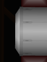
These doors can be opened with regular shots from your main
guns, or by any other weapon.
Red Doors
These doors can be broken open by a rocket impact.
Blue Doors
These doors can be opened by a bomb blast.
Pink Doors
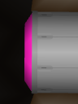
These heavily-armored doors will require a hyper rocket to open.
Cyan Doors
The very strongest blast doors in Zenith require nothing less than a
mega bomb to break open.
Locked Doors
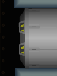
These doors cannot be opened by any weapon. However, often they can
be unlocked by defeating a nearby enemy, finding the right switch, or
entering from the other side. Once unlocked, they can be opened by
your regular guns.
Gate
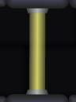
An energy forcefield that blocks any passage. Often there will be a
nearby switch to turn it off; other times you may need to search
farther to find a way to proceed.
Switches
Switches can be activated by shooting them with the right weapon.
Similarly to doors, switches come in several colors, which hint at the
right weapon to use. Activating switches that you find is almost always
helpful to your mission, so be sure to shoot any that you come across.
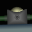
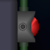
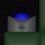
Enemies
Zenith Colony is home to many dangerous creatures and robots: from rogue
security turrets, to wild animals, to alien monsters. Most enemies can
be defeated with any weapon, but some enemies have armor that requires
you to use a more powerful weapon, or to hit them in a vulnerable spot.
Below are a few of the enemies you will encounter while exploring the
Zenith planetoid:
Security Turret
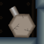
These turrets are supposed to keep the colony safe, but they seem to
have gone haywire. Some have been damaged and will be easy to destroy,
while others are armored and impervious to your starting weapon.
Cave Crawler
Crawls along walls and ceilings. Not too much of a threat, as long
as you don't get too close.
Supply Box
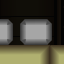
Leftover supplies the colonists didn't have time to take with them
when disaster struck. Blast these open with guns to refill your
shields or ammo. Some boxes are armored, and will require explosives
to break open.
Swooper
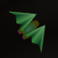
Native flying creatures of Zenith, often found sleeping hanging from
the ceilings of caves and tunnels. If disturbed, they will give chase
at high speed.
Spiner
These slowly-drifting creatures shoot spines in all directions if you
get too close.
???
Mysterious invaders of unknown origin, unlike anything you've ever
encountered. Extremely dangerous; engage with caution.
...and many, many more...
Tips for bosses
Each colored region on the map has a boss enemy that you must defeat to
gain access to a major upgrade. The boss room will usually be marked on
your map once you download map data for that region.
Some tips for defeating bosses:
Stay calm, and keep moving. Most bosses have a
harder time hitting you if you don't stand still.
Look for a weak point. Some bosses have armored
sections that can't be damaged by your weapons. In those cases, look
for a more vulnerable spot that you can damage.
Watch your shields. Bosses often summon smaller
minions to attack you, which you can kill to gain shield and ammo
pickups. If your shields get low, you may need to temporarily focus on
fighting minions to refill your shields rather than on fighting the
boss itself.
Don't give up. Remember, if you can get to the boss
room, then you already have everything you need to defeat that boss.
That said, if you still keep dying, try exploring more before heading
to the boss--there may be optional upgrades you can find that will make
the fight a little bit easier.
Gun Upgrades
There are eight different gun upgrades you can acquire during the game.
You can use up to two of them together at once, combining their effects.
For example, using CHARGE
and FREEZE together allows you to charge
up a powerful shot that is extra effective at freezing enemies, while
using HOMING and
PHASE together allows you to fire shots
that both seek out enemies and pass through walls. Using the right
weapons in the right situations is key to survival!
Charge Gun
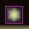
Allows you to charge up your gun to fire a more powerful shot. With
the charge gun selected, hold down the fire key (C by default) for a
few seconds until the sound changes, then release. Charged up shots
can damage some armored enemies that are immune to normal shots. Some
breakable walls can be destroyed outright by a charged shot; those that
can't will flash a color when hit by a charged shot, hinting at what
weapon is needed.
Freeze Gun
Allows you to freeze enemies in place in addition to damaging them.
Frozen enemies can't move or attack, and won't damage you if you run
into them. Weaker enemies can be frozen with a single shot; stronger
enemies won't be frozen until most of their health has been depleted
first.
Triple Gun
Fires a spray of three shots at once instead of just one, although
each shot is slightly weaker than normal. Great for dealing with
swarms of weak enemies, or situations where aiming accurately is
difficult.
Homing Gun
Fires shots that automatically seek out nearby enemies; however, each
shot is significantly weaker than normal. Try combining this with
other guns to help offset this weakness.
Phase Gun
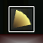
Fires a short-ranged shockwave that passes freely through walls,
allowing you to hit switches and enemies that would otherwise be
unreachable.
Burst Gun
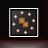
Fires powerful shots that burst into shrapnel on impact, potentially
doing even more damage to nearby enemies. This burst effect also gives
you an indirect way to shoot around corners.
Pierce Gun
Fires shots that pierce straight through multiple enemies,
penetrating most armor and inflicting a great deal of damage. However,
it requires a lot of energy to fire.
Beam Gun
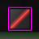
This devastating weapon fires a continuous energy beam, melting most
enemies in seconds. Combine with other guns to vary the effect of the
beam.
Ordnance Upgrades
When energy weapons won't do the trick, try explosives! You can use the
9 and 0 keys to switch between rockets and bombs. Then press the
fire key (C by default) while holding down the ordnance key (X by
default) to use the selected ordnance.
Rockets
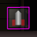
Rockets are very fast and pack a punch, but their ammo is limited and
they can be hard to aim. Each rocket upgrade increases your maximum
capacity by 5.
Bombs
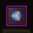
Bombs can deal a lot of damage to a wide area. Once you drop one
behind you, it will detonate after a few seconds, or when an enemy gets
close (for safety, the proximity detonator won't trigger if your ship
is still nearby). Each bomb upgrade increases your maximum capacity by
3.
Hyper Rockets
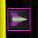
With this upgrade, you can charge multiple rocket warheads into a
single projectile with a more powerful explosive. With rockets
selected, hold down the ordnance key (X by default) for a few
seconds, then press the fire key (C by default) to fire a
hyper rocket. Each hyper rocket uses three rockets.
Mega Bombs
With this upgrade, you can charge multiple bombs together to create a
single, titanic blast. With bombs selected, hold down the ordnance key
(X by default) for a few seconds, then press the fire key (C by
default) to drop a mega bomb. Be sure to move away immediately--the
blast radius is very wide and the explosion is very damaging! Each
mega bomb uses three bombs.
High Explosives
Upgrades all of your ordnance--rockets, bombs, hyper rockets, and
mega bombs--to deal even more damage.
Attuned Explosives
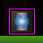
Carefully shaped charges allow your ordnance to have a wider blast
radius, while simultaneously shielding your ship from the brunt of the
blast (should you be caught in the explosion by accident), reducing the
damage you take from your own explosives.
Shield Upgrades
Your gunship is a highly versatile design, but it wasn't really built for
heavy subterranean combat. Fortunately there are a number of upgrades
you can find to help protect you from the various dangers you'll
encounter on Zenith.
Shield Battery
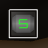
Your ship starts out with a maximum shield power of 100. Each shield
battery you find increases that maximum by 25, allowing you to survive
that much more damage before needing to repair.
Hardened Armor
While the smooth surfaces found in the habitation section of the
colony don't pose a threat, bumping into rocky cave walls deeper within
Zenith can drain your shields quickly. This upgrade greatly decreases
the damage you take from bumping into rough walls, and decreases all
other kinds of damage a little bit too.
Dynamic Armor
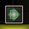
Even in its base configuration, your gunship can survive the
pressures of an underwater environment, but it won't be very
maneuverable. This upgrade reshapes your hull to make it much more
hydrodynamic, as well as better protecting you from all forms of
damage.
Thermal Armor
Extreme ambient temperatures pose a threat to your ship, and will
drain your shields continuously without this upgrade to protect you.
In addition to allowing you to safely explore high-temperature areas,
it also reduces all other forms of damage a little bit.
Reactive Armor
The ultimate defensive upgrade: it not only reduces all damage you
take, but also redirects that damage back outwards. With this upgrade,
enemies that collide with your ship will take damage themselves.
Energy Upgrades
Your primary guns require energy to fire. Your ship will automatically
recharge its energy over time, but some of the later weapons you can get
will drain your energy even faster, so upgrading your energy systems will
allow your weapons to handle a heavier duty cycle.
Capacitor
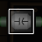
Your ship starts out with a maximum energy capacity of 100. Each
capacitor you find increases that maximum by 25, allowing you to fire
your guns a little longer before stopping to recharge.
Fusion Reactor
As you collect more capacitors, you may find your ship's energy takes
quite a long time to recharge completely. This upgrade will
significantly increase the rate at which your energy recharges.
Quantum Reactor
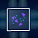
This upgrade increases your energy recharge rate even more than the
Fusion Reactor.
Engine Upgrades
Although your ship's standard engines are well up to the task of
navigating deep space, there's still room for improvement when it comes
to terrestrial navigation.
Retro Thrusters
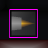
These forward-facing engines will allow your ship to reverse thrust
when you need to. Once you get this upgrade, you can use the reverse
key (down arrow by default) to accelerate backwards.
C-Plus Drive
This device lets you achieve super-luminal speeds without needing to
be in deep space. Fly in a straight line for several seconds without
stopping to charge it up; you'll know it's ready when your smoke trail
turns green. Once charged, double-tap the thrust key (up arrow by
default) to dash. While dashing, the tachyon field around your ship
renders it impervious to all damage, and can destroy most enemies and
even some walls just by colliding with them.
Orion Booster
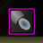
When you need to achieve high speeds in a space too cramped to charge
up your C-plus drive, you can use this upgrade. Select bombs, hold the
ordnance key (X by default) for a few seconds to charge up, then
double-tap the reverse key (down arrow by default) to drop an orion
charge. Your ship will ride the shockwave from the blast, quickly
accelerating you to a high speed. Each use consumes two bombs.
Utility Upgrades
Exploring Zenith isn't just a matter of weapons and combat--you'll need
all manner of other tools as well. Below are a few such upgrades you can
find that will help you during your mission.
Tractor Beam
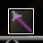
Once you have this upgrade, hold down the utility key (Z by default)
to lock onto nearby flashing tractor nodes, allowing you swing freely
around them at a fixed distance. This tool has a variety of uses, for
example allowing you to maintain your speed while turning corners, or
letting you hitch a ride from one of the automated transport rigs still
running throughout Zenith.
Tractor Cloak
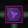
This experimental cloaking device allows you to hide from enemies or
motion sensors. It must be charged up from a tractor node; lock on to
any tractor node for several seconds, and the cloak will automatically
activate. Once you disconnect from the node, the cloak will last for
several more seconds, or until you fire your weapons.
Magnet Sweep
Once equipped, this upgrade will automatically pull all nearby shield
and ammo pickups towards your ship. Very helpful for restocking your
supplies quickly in a high-pressure situation, without taking away your
focus.
Sensor Upgrades
As you search all over Zenith to find the surviving colonists, you will
need to upgrade your sensors to help find them.
Infrascanner
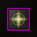
Some areas on Zenith are extremely dark in the visible light
spectrum; this infrared sensor array gives you increased visibility in
those areas.
Milliwave Radar
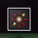
Many of the upgrades and passages on Zenith are hidden behind
obstacles. With this upgrade, you can hold down the utility key (Z by
default) for several seconds to start scanning for these hidden
locations. If there is something to be found in the room you're in,
the arrow that appears will slowly move to point towards where you need
to search.
Hint System
Part of the fun of Azimuth is exploring and discovering on your
own. However, if you become frustrated because you really can't figure
out where to go next, there is a built-in hint system that can help.
To enable the hint system, click on the “Options” button on
either the title screen or the pause screen, and check the “Enable
hint system” box. Once the hint system is enabled, a new button
will appear on the Options pane of the pause screen that says “GET
HINT”. If you click this button, it will reveal the next location
on the map that you should attempt to reach (usually either the next
upgrade that you need to acquire, or the next story element that you
haven't seen yet).
License
Azimuth is free software: you can redistribute it and/or modify it
under the terms of the GNU General Public License as published by the
Free Software Foundation, either
version 3 of
the License, or (at your option) any later version.
Azimuth is distributed in the hope that it will be useful, but
WITHOUT ANY WARRANTY; without even the implied warranty of
MERCHANTABILITY or FITNESS FOR A PARTICULAR PURPOSE. See the GNU General
Public License for more details.